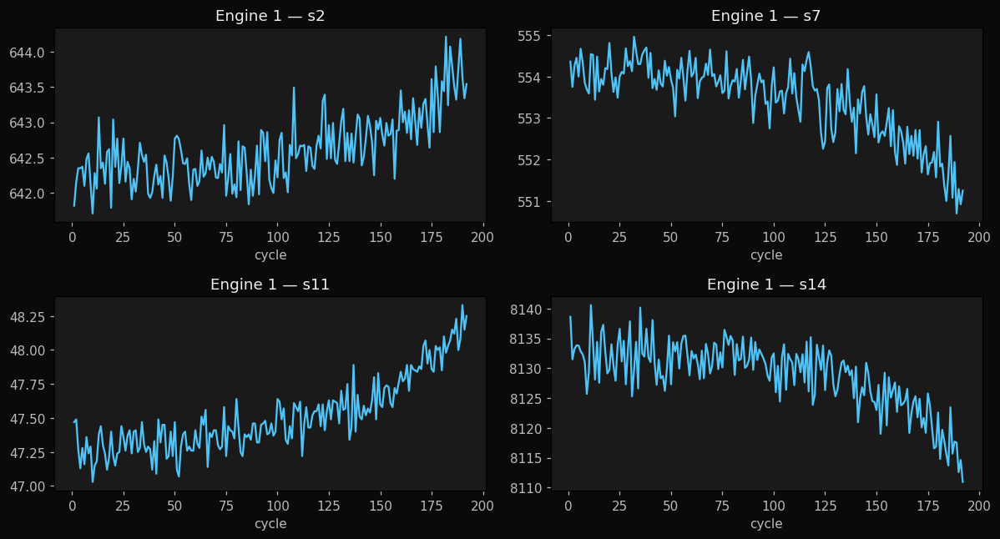
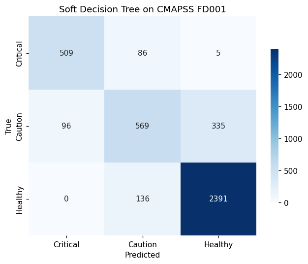
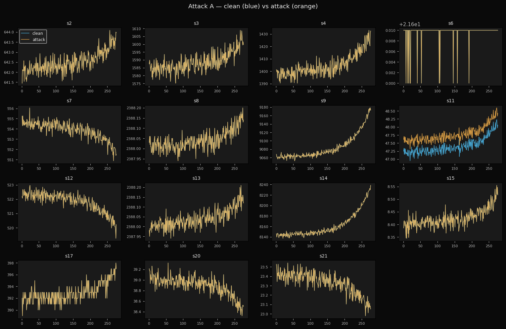
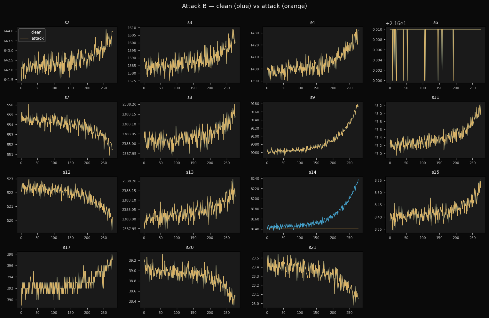
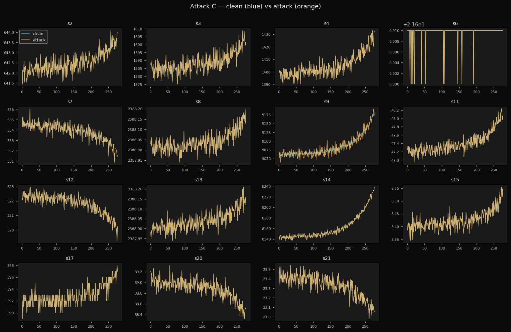

From Black Boxes
to Glass Boxes
Building Explainable Neural Trees
for Safety-Critical Decisions
Cagri Temel, CTO at Hezarfen LLC · IEEE Senior Member
Washington State University · Data & Analytics Breakout
Cagri Temel
- CTO of Hezarfen LLC, building explainable AI for regulated industries
- IEEE Senior Member · open-source maintainer
- Author of neural-trees (PyPI, MIT), the package you will use today
- Workshop paper: Robust and Uncertainty-Aware RUL Prediction with Temporal Neural Trees (NASA CMAPSS)
- Today's mission: in 2 hours and 45 minutes, you build, break, and explain a real model
github.com/cgrtml/neural-trees · linkedin.com/in/cagritemel
Data-driven decisions, when the cost of being wrong is high
For the next few hours we will look at how data-driven systems make decisions, and at how we make those decisions trustworthy in safety-critical settings.
Today's case: a turbofan engine that needs to predict its own failure.
A turbofan engine.
When will it fail?
If you knew with certainty, what would you do differently?
Getting this wrong is expensive
- Predict too late. Engine fails mid-flight. Lives lost.
- Predict too early. Healthy engines replaced. $100M wasted.
- Predict accurately but cannot explain. FAA refuses to certify your system.
Accuracy alone is not enough.
You also need to defend the prediction.
NASA CMAPSS
Commercial Modular Aero-Propulsion System Simulation
- 100 turbofan engines, simulated to failure
- 21 sensors per timestep: temperatures, pressures, fan speeds, fuel flow
- Each engine logs hundreds of flight cycles before failing
- Public, open data, cited in 1,000+ academic papers
Source: NASA Prognostics Center of Excellence · ti.arc.nasa.gov
Remaining Useful Life (RUL)
The number of flight cycles left before this engine fails.
RUL=192 RUL=150 RUL=80 RUL=30 RUL=10 RUL=0 💥
Train: complete trajectories. Test: partial trajectories, where you predict RUL from what you can see.
21 sensor channels
| # | Sensor | What it measures |
|---|---|---|
| 2 | T24 | LPC outlet temperature |
| 3 | T30 | HPC outlet temperature |
| 4 | T50 | LPT outlet temperature |
| 7 | P30 | HPC outlet pressure |
| 8 | Nf | Physical fan speed |
| 9 | Nc | Physical core speed |
| 11 | Ps30 | Static pressure HPC outlet |
| 12 | phi | Ratio of fuel flow to Ps30 |
| 14 | NRc | Corrected core speed |
| 15 | BPR | Bypass ratio |
| 17 | htBleed | Bleed enthalpy |
| 20 | W31 | HPT coolant bleed |
Highlighted rows: most predictive after feature selection.
Deep learning gets us close
model = nn.LSTM(input_size=17, hidden_size=64, num_layers=2)
# … training …
RMSE on test set: 15.49 cycles
R²: 0.855That's pretty good. About 15 cycles off, on average.
So we ship it to the FAA, right?
No.
Regulators don't ask "how accurate is your model?"
They ask "why did your model say that?"
FAA · FDA · OCC (banking) · EU AI Act
All require traceable, explainable decisions for high-risk systems.
Black Box vs. Glass Box
🔲 Black Box
LSTM, deep CNN, transformer
✓ High accuracy
✗ "Why?" → no answer
✗ FAA / FDA / OCC: rejected
🪟 Glass Box
Decision tree, linear regression
✓ Fully traceable
✗ Lower accuracy
✓ Regulators: approved
Today's question: can we have both?
Classic Decision Tree
/ \
yes no
/ \
[ Sensor 14 (NRc) > 8138 ? ] [ HEALTHY ]
/ \
yes no
/ \
[ CRITICAL ] [ CAUTION ]
Beautifully explainable. Often poor accuracy.
The cause is hard splits: a 0.01 difference in a sensor flips the entire path.
Hard split
def hard_split(x, threshold):
if x > threshold:
return "right"
else:
return "left"
Output: "left" or "right". Discrete. No gradient.
Cannot train with backpropagation. Tree built greedily, one node at a time.
Soft split
def soft_split(x, w, b):
# sigmoid: σ(z) = 1 / (1 + exp(-z))
p_right = sigmoid(w @ x - b)
return p_right # ∈ [0, 1]Output: a probability of going right. Continuous. Gradient flows.
Train the entire tree end-to-end with backprop, like a small neural network.
Soft Decision Tree
/ \
0.82 0.18
/ \
[ σ(w·x − b) → 0.30 ] [ leaf: P(C, H, W) ]
/ \
0.30 0.70
/ \
[ leaf ] [ leaf ]
Every leaf gets a weighted vote based on path probability.
Final prediction = sum over all leaves.
You get both
From the tree
- Path traceability
- Per-feature thresholds
- Human-readable rules
From the network
- End-to-end training
- Composable with other layers
- Higher accuracy
Three properties
- Explainability
Every prediction comes with the path that produced it. - Noise robustness
Soft splits are less brittle to small sensor perturbations than hard splits. - Sensor failure tolerance
Channel-level dropout during training teaches the model to operate under partial sensor failure.
You'll see all three in the next 90 minutes.
The numbers
| Model | Clean RMSE | 30% sensors missing | Explainable? |
|---|---|---|---|
| LSTM | 15.49 | +89% degradation | ✗ |
| Random Forest | 18.07 | n/a | partial |
| Temporal Neural Tree | 15.78 | +17% degradation | ✓ |
Within 0.3 RMSE of LSTM on clean data.
5x more robust under sensor failure.
neural-trees
pip install neural-trees- Open source, MIT licensed
- scikit-learn compatible API
- PyTorch backend
- Soft Decision Trees, Hierarchical Mixture of Experts, statistical model comparison
github.com/cgrtml/neural-trees
Train Your Own Neural Tree
Open the QR code on the next slide.
No installs. Just Gmail and a browser.
Scan to start
![QR code]()
github.com/cgrtml/wsu-workshop-may15
1. Scan with phone camera → 2. Tap "Activity 1" → 3. Sign in with Gmail → 4. "Copy to Drive"
Activity 1: what you will do
- Load & explore CMAPSS FD001 (10 min)
Plot a few engines. Find which sensors degrade. - Bin RUL into 3 classes (5 min)
Critical · Caution · Healthy - Train a SoftDecisionTree (15 min)
depth=4, max_epochs=30, runs on CPU - Evaluate accuracy & confusion matrix (5 min)
- Traverse a prediction (15 min)
This is the heart of the workshop. - Discussion (5 min)
Imports
Paste this
You should see
If you see IndentationError, every line must start at the left edge.
Load the data
Paste this
You should see
100 turbofan engines, 20,631 timesteps total.
Compute Remaining Useful Life
Paste this
You should see
RUL capped at 125. Engine 1 lived 192 cycles total.
Visualize one engine's degradation
Paste this
s2, s11, s14 trend up. s7 trends down. The engine is wearing.

Bin RUL into three classes
Paste this
You should see
14% Critical · 24% Caution · 61% Healthy.
Build the feature matrix
Paste this
You should see
15 of 21 sensors are informative. s1, s5, s10, s16, s18, s19 are constant — dropped.
Train / test split
Paste this
You should see
80/20 split. stratify=y preserves the 14/24/62 class ratio in both sets.
Train the Soft Decision Tree (30 to 60 sec)
Paste this
You should see
Train vs test gap ≈ 1 point. No overfitting.
Confusion matrix and per-class report
Paste this
0 false-Criticals on Healthy engines. Only 5 missed-Critical on 600.

Which sensor does each node lean on?
Paste this
You should see
s14 and s6 dominate multiple nodes. These are the model's pillars.
Read one prediction (the heart of the workshop)
Paste this
You should see
You can defend this prediction to a regulator. An LSTM cannot.
Checkpoint
By 10:50 you should have:
- ✓ A trained SoftDecisionTree on FD001
- ✓ Test accuracy > 80%
- ✓ A printed decision path for at least one engine
☕ 10-minute break.
Activity 2 (team competition) starts at 11:00.
Sensor Fault Detection
One of engine 17's sensors is reporting bad data.
Which sensor, and can your model tell you why?
The scenario
You are the data science team at an airline. Maintenance ops sends you three suspicious test files for the same engine:
"Something is wrong with engine 17. The pattern looks like a sensor drift, a frozen sensor, or noise spikes, but we cannot tell which channel is at fault. Localize the faulty sensor before the next flight."
You have two models in production:
- Your SoftDecisionTree from Activity 1, explainable
- A RandomForest baseline, accurate but opaque
The same technique works for hardware failures and for adversarial attacks. Both manifest as anomalous sensor patterns the model has to flag.
Teams
- Form groups of 3 to 4 students
- Use the same notebook within your team
- You have 17 minutes for analysis
- Then we collect answers
First team to correctly identify all three attacks wins.
Three attack files
| File | Attack type | Your job |
|---|---|---|
attack_A.csv | Drift (constant offset) | Which sensor? |
attack_B.csv | Stuck-at (frozen value) | Which sensor? |
attack_C.csv | Gaussian noise injection | Which sensor? |
Each file is a copy of clean engine 17 data, but one sensor channel has been manipulated.
Add a RandomForest baseline
Paste this
You should see
Two models, nearly identical accuracy. One is explainable. One is not.
Predict on clean engine 17
Paste this
You should see
95% agreement on clean data. The two models say roughly the same thing.
How much did each attack move the predictions?
Paste this (three blocks, one per file)
You should see
Attack C: RF changed at only 1 cycle. It is missing the attack. The Soft Tree caught 8.
Attack A — look for two parallel lines
Paste this
One sensor shows the orange line shifted up by a constant offset. That is drift.
Answer: s11 — drift.

Attack B — look for a flat horizontal line
Paste this
One sensor's orange line is flat while blue rises. Stuck-at.
Answer: s14 — stuck-at.

Attack C — look for a noisier line
Paste this
Same trend, much higher variance. Noise injection.
Answer: s9 — noise.

Quantify the divergence
Paste this
You should see
Numbers confirm the visual answer. Only one sensor differs in each file.
⏱ 17 minutes
Open activity2_student.ipynb
Run cells. Discuss as a team. Pick your answers.
I will come around with hints, but I will not give you the answer.
Answers
| Attack | Sensor | Type |
|---|---|---|
| A | Sensor 11 (Ps30) | Drift |
| B | Sensor 14 (NRc) | Stuck-at |
| C | Sensor 9 (Nc) | Gaussian noise |
Which team got all three? 🏆
What just happened
- The RandomForest changed its prediction, but could not tell you why.
- The SoftDecisionTree's split weights shifted in a sensor-specific way.
- That shift is the explanation. It's a fingerprint of which sensor the model is leaning on.
Explainability didn't just make the model auditable.
It made the model a debugging tool for the system around it.
🔧 GitHub Contribution Sprint
Walk out of this room with a real open-source contribution
on your GitHub profile.
15 minutes. Your name on a published ML library.
How it works
- Open github.com/cgrtml/neural-trees → Issues tab
- Filter by the label
good first issueand pick one with a 10 to 20 minute scope - Comment "I'm taking this" so no duplicates
- Fork the repo, edit, open a PR
- I will review live. Simple PRs get merged on the spot.
20+ issues waiting · pick what fits your level
Why this is worth your 15 minutes
- A concrete open-source contribution on your profile, visible to recruiters, internships, and grad-school admissions.
- You become part of a published Python ML library (PyPI:
neural-trees). - Your name goes in the README. I will add a "WSU Workshop Contributors" section listing every merged PR.
- It is real proof that you can collaborate on a codebase, not just clone tutorials.
Open the repo. Pick an issue. Go.
The EU AI Act
Took effect in 2025. Applies to any AI system serving EU customers.
For "high-risk" systems (predictive maintenance for aviation qualifies):
- Article 13: Transparency & explanation requirements
- Article 14: Human oversight with meaningful interpretation
- Article 15: Robustness against adversarial inputs and faults
Same direction in the US: SR 11-7 (banking), FDA SaMD, FAA AC 25-1309.
What you walk out with
- Explainability is mandatory in safety-critical AI.
Required by EU AI Act, FDA, FAA, OCC for high-risk systems. - Soft Decision Trees give you both worlds.
Neural-network accuracy with tree-level interpretability. - You ran this yourself, on real NASA data.
Trained a model · localized a sensor fault · maybe shipped an OSS contribution.
Where this is going
Banks (Model Risk Management), insurers, healthcare, aerospace. Every regulated industry needs explainable AI.
My company Hezarfen builds compliance-ready AI for US mid-market banks under SR 11-7 and the EU AI Act.
If any of this interested you, whether as a thesis topic, an open-source contribution, or just a conversation, reach out.
Stay in touch
Cagri Temel
Hezarfen LLC · IEEE Senior Member
github.com/cgrtml/neural-trees
linkedin.com/in/cagritemel
Workshop materials: github.com/cgrtml/wsu-workshop-may15
Thank you
To Dr. Sergey Lapin and Jeremy
for the invitation.
Questions? We'll stay 5 minutes after.